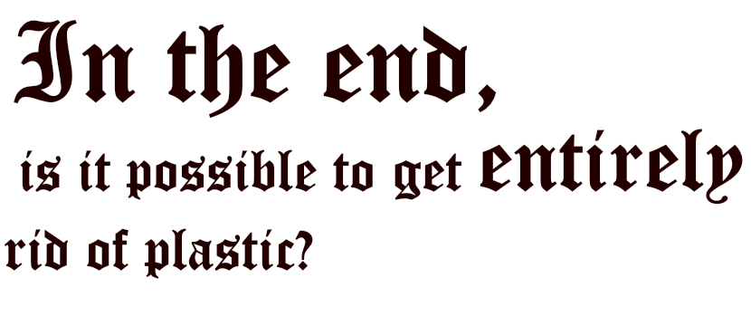
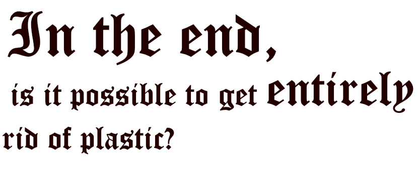

For global plastic production, packaging is the first outlet. It has increased be more than 40% in ten years, going from 255 to 348 million tons a year. According to a study by the magazine “60 million consumers”, published in March, only 26% of plastic packaging is correctly recycled. The share of raw materials reused in the production of the plastics sector is the lowest when compared with that of paper or aluminum. To change this percentage, the French government is going to implement a device whose objective is to achieve 100% recycled plastic in 2025.
It’s going to be a “bonus-malus system” that will be implemented next year, in which the purchase of non-recyclable plastic product will be penalized.
Brune Poirson, secretary of State for Ecological and Solidarity Transition declared in an interview in “le Journal du Dimanche (JDD)” that in the future, when there is a choice between two bottles, the first one made of recycled plastic and the other not, the first one will be cheaper. This will aim to make it easier for consumers to choose between buying a recyclable product and one that is not.
However, this system is only part of the solution since it only concerns recycling and not plastic reduction. The question remains unanswered, and not only, but we do not yet know how this device will be put in place, and how it will lower the cost of recycled plastic items. There is not clarification on this subject.
Stakeholders around the world are starting to set up initiatives to try to solve the issues of sorting waste and especially plastic waste. To give illustrations of this, in Chile and New Zealand, plastics bags for single use have been banned just like in France, for those who are not compostable.
In Ireland, the government put in place a tax of plastic bags in 2002 known as the “PlasTax”. They aim to trigger a change in the consumer’s behavior and promote a more ecological way to replace plastics bags. In the year after the introduction of the tax, the use of plastic dropped by more than 90% and the consumption of plastic bags has decreased from 328 to 21 bags per year. The success of the Irish tax proves how consumer’s behavior can change with the adoption of a high tax. However, it’s undeniable that for the success of such a tool, the participation of the stakeholders is essential.
Then we have the example of the government of Rwanda. They have strictly prohibited the manufacture, use, sale and importation of all types of plastic bags. They replaced the plastic bags with paper bags, or else the inhabitants started using reusable bags made of cotton.
Nevertheless, the stakeholders were insufficiently consulted for the design of this policy. Over time and despite the problems the people endured, they got used to the new regulation and Kigali, the capital of Rwanda was nominated by UN Habitat in 2008 as the cleanest city in Africa.
The government of Kenya also announced, in 2017, a ban on the production, sale, importation and use of plastic carrier bags. In the case of non-compliance with this prohibition, offenders can face fines of up to $38,000 or four-year jail terms, making Kenya’s plastic bag ban the most severe in the world.
Other countries in the world have implemented initiatives similar to those previously presented but all with the same goal: the decrease in the production of plastic, and the establishment of alternatives to replace it. However, once again we come to the same conclusion: there is no real solution for the reduction of plastic waste. Despite the fact that there are no existing solutions up to date, there are still initiatives that are being developed.
We have seen that many initiatives regarding the reuse of plastic that has been put into work but it is more difficult to talk about initiatives to reduce plastic. Although it is very helpful for the ecosystem, the question still stands. However, it is not a coincidence that this problem continues without present and applicable solutions.
“Plastic Tide” is a start-up created by Englishman Peter Kohler, with the aim of identifying the most polluted places in order to launch massive cleaning operations. To do this, he uses aerial photos taken by drones and he then forms an algorithm in artificial intelligence with these photos, allowing him to distinguish a plastic bag from a jellyfish, a bottle cap from a shell. Its goal is obviously global, but it's still a project in progress, and they need volunteers
The problem of plastic reduction is more complicated, we realize that in some cases it is almost impossible to eliminate the plastic completely. To illustrate this idea, when we talk about the components of a computer, in the mother card we find non-replaceable components that cannot be reused or completely destroyed by their physical material of which they are composed.